Argues coding agents can now tackle deep systems work (CUDA kernel writing, distributed fine-tuning, multi-agent automated research) when given skills and open primitives like the Hugging Face Hub, Trackio, and HF Jobs, with concrete ben...
This traces the AutoLab pattern from Karpathy's Auto Research: four agent roles queue and run experiments against Hugging Face Jobs, then log to Trackio's open parquet layer for direct querying (ours).
“Efficiency in deep learning, so efficiency in kernels, is split into three main sections. One, compute, two, memory, and three, overhead.”
said at 03:37“a modern GPU, let's take a H100 for example, can do a petaflop a second of computation, but its memory bandwidth is 3 terabytes”
said at 04:08“we generated a a kernel for Qwen 3 8B for H100, and we found that we had a 94% speedup”
said at 07:47“GPT-OSS is slightly less accurate using the same tokens. Kimmy is more accurate and using less tokens. Haiku is a bit more accurate using less tokens”
said at 08:48“Andre Karpathy a few weeks ago, maybe a month ago now, released a project called Auto Research, which was based on his other projects, nanoGPT and nanochat”
said at 10:20“I tell it to use planner to propose up to first single change experiments, use reviewer to reject duplicates or stale ideas”
said at 13:57“Trackio is useful with agents because it uses a completely open data layer, basically parquet”
said at 13:26“we have the the fundamentals in place like storage, tracking, and compute, which I think will allow us to scale our engineering”
said at 17:35The 94% speedup number is a real benchmark result but explicitly not state-of-the-art -- the actual claim being made is about reach (agents can produce usable, if not optimal, kernels for under-served hardware/model pairs), which is a narrower and more defensible claim than 'agents can write SOTA kernels' (ours).
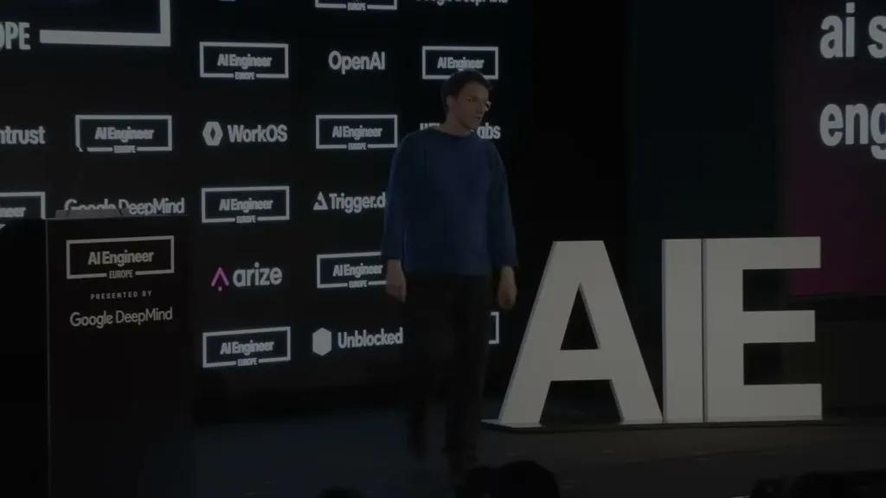
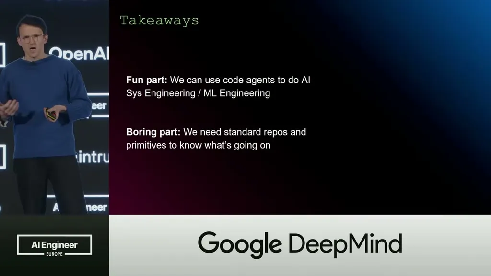
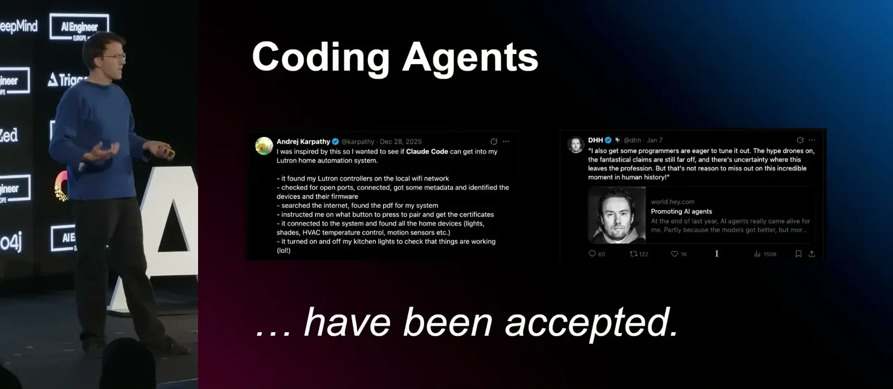
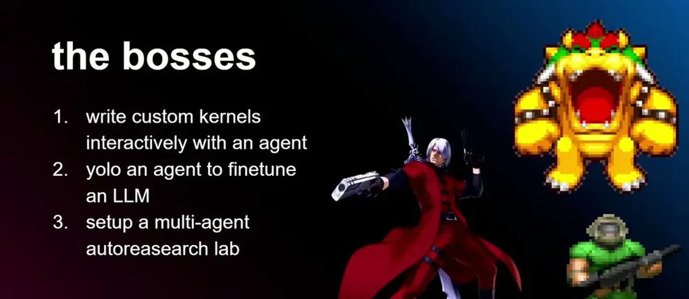
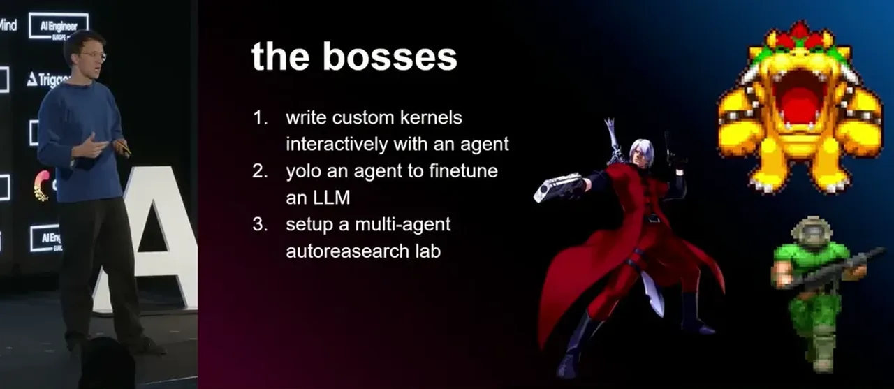
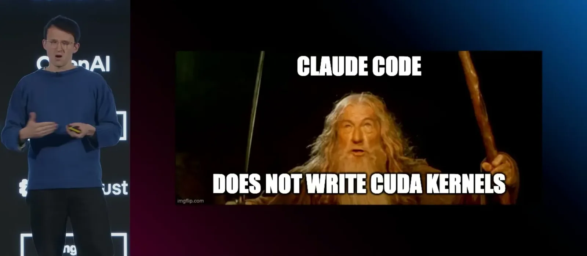
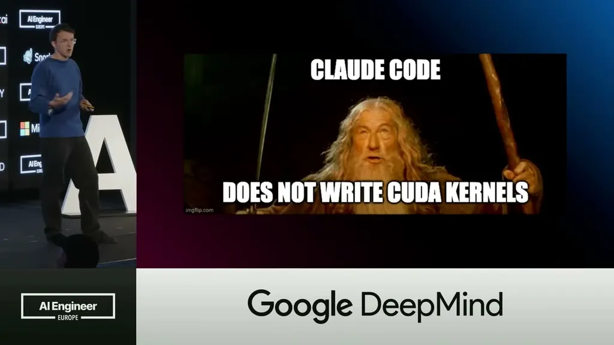
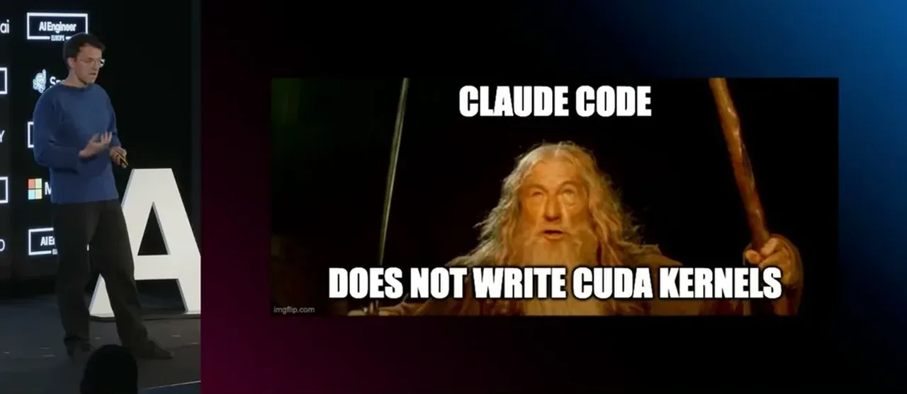
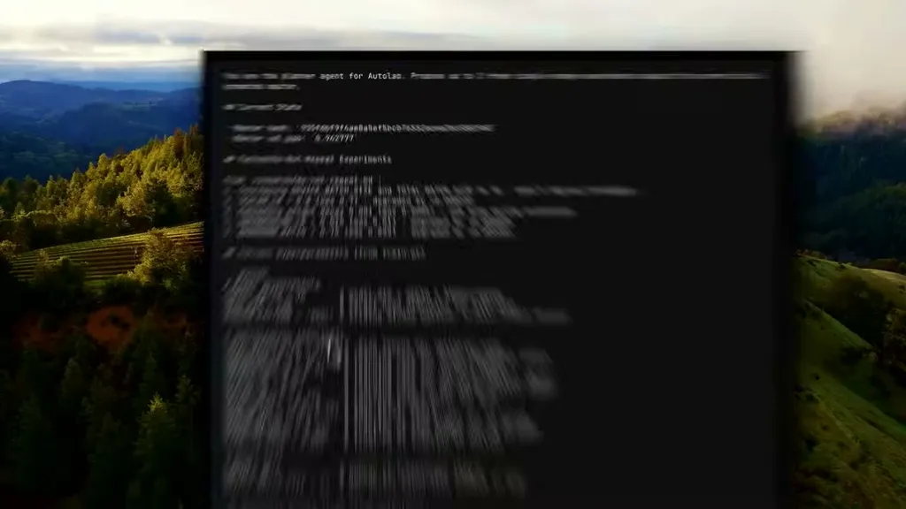
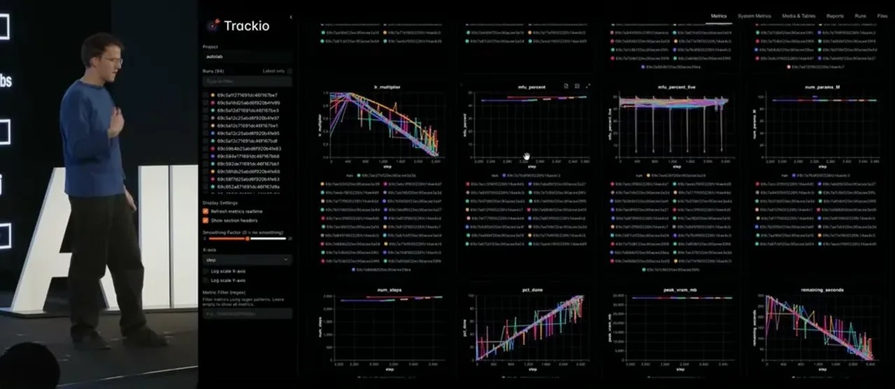
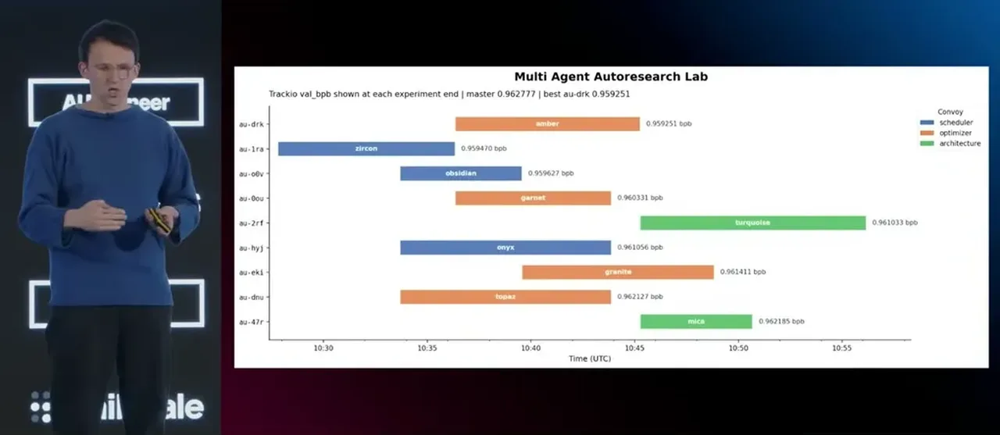
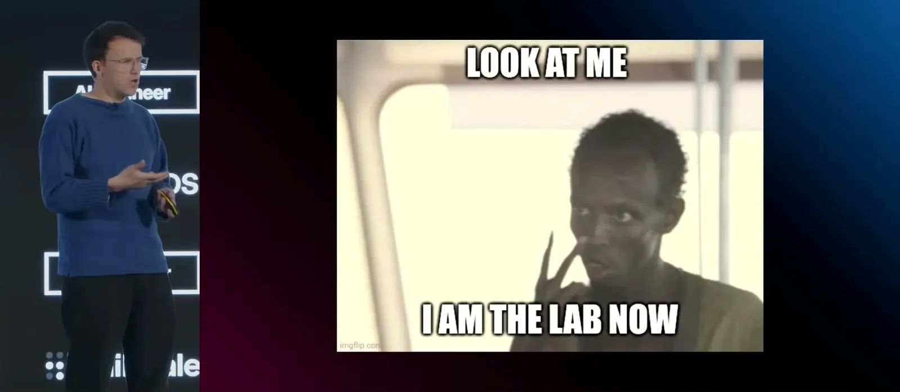
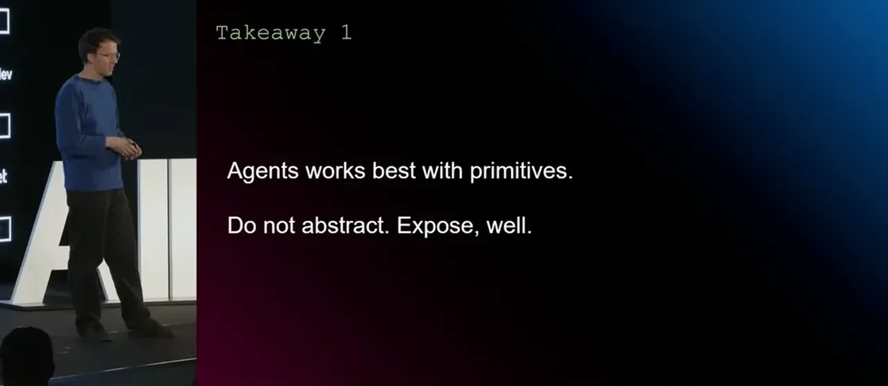
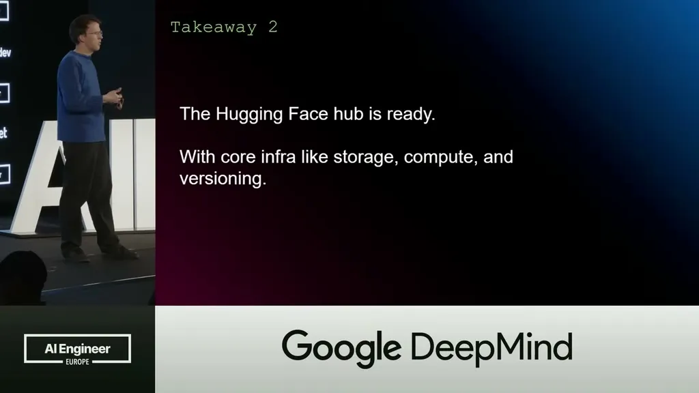
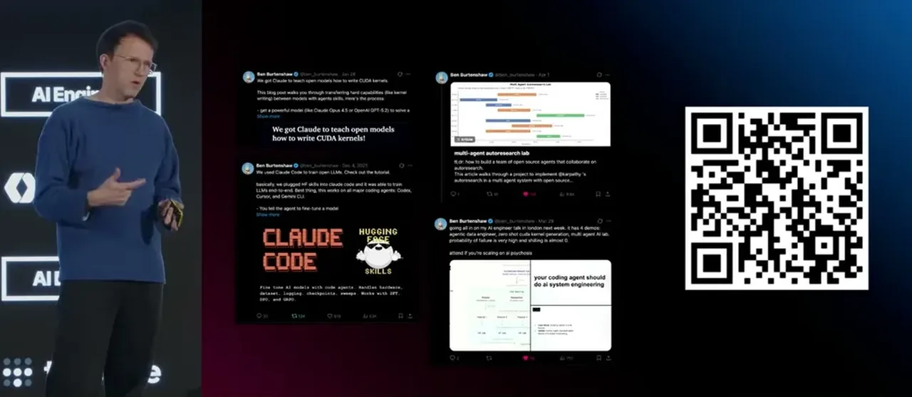
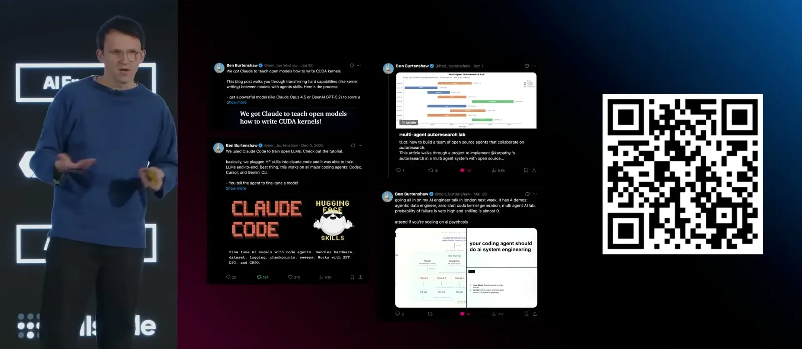
| Stance | Claim | t |
|---|---|---|
| asserts | Kernel efficiency splits into compute, memory, and overhead, with memory usually being the actual bottleneck. | 03:37 |
| asserts | An H100 GPU can do a petaflop/sec of compute but only has 3 terabytes/sec of memory bandwidth, making memory the usual bottleneck. | 04:08 |
| asserts | An agent-generated kernel for Qwen 3 8B on H100 achieved a 94% speedup, though not state-of-the-art. | 07:47 |
| asserts | Upskill comparisons showed different models trade off accuracy against token usage on the same skill, e.g. GPT-OSS less accurate, Kimi more accurate with fewer tokens, Haiku more accurate with fewer tokens. | 08:48 |
| asserts | Karpathy's Auto Research project, built on his nanoGPT and nanochat work, had Claude Code iteratively improve a training script. | 10:20 |
| recommends | The planner agent should propose single-change experiments while the reviewer rejects duplicate or stale ideas. | 13:57 |
| asserts | Trackio's dashboard is backed by an open parquet data layer, so agents or users can bypass the UI to build custom visualizations directly. | 13:26 |
| asserts | The Hugging Face Hub already has the storage, tracking, and compute fundamentals needed to scale agentic systems-engineering work. | 17:35 |
Machine-readable copy embedded in this page (script#ontology) and in the corpus ontology.